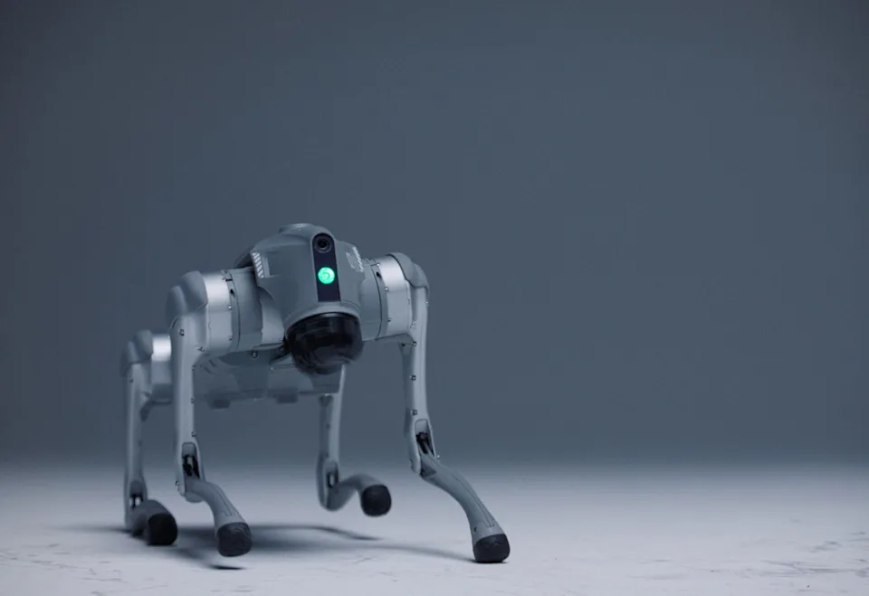

Robot med digitalt nervesystem lærer «som et menneske» i verdens første gjennombrudd.
Kortversjon
- Banebrytende AI-teknologi: IntuiCell har utviklet et «digitalt nervesystem» som lar roboter lære gjennom erfaring, uten behov for forhåndstrening eller store datasett.
- Tilpasning og læring: Teknologien gjør det mulig for roboter å lære ferdigheter, tilpasse seg endringer og operere i uforutsigbare miljøer, demonstrert med robot-hunden Luna.
- Potensial for fremtiden: IntuiCell mener dette kan revolusjonere AI ved å etterligne biologisk intelligens, med mulige bruksområder som hjemmehjelp, sykehusarbeid og selvkjøring.
Sammendraget er laget ved hjelp av kunstig intelligens (KI) og kvalitetssikret av våre journalister.
AI-ingeniører har utviklet verdens første «digitale nervesystem», som gjør det mulig for roboter å lære på samme måte som mennesker gjennom fysisk erfaring i den virkelige verden.
Den svenske oppstartsbedriften IntuiCell har avduket denne banebrytende teknologien i en robot-hund kalt Luna, og demonstrert hvordan det biologisk inspirerte nettverket gjør at den kan lære ferdigheter, tilpasse seg endringer og forbedre seg over tid.
En video av roboten viser hvordan den lærer å reise seg opp uten noen form for forhåndstrening, på en måte som minner om en nyfødt sjiraff.
«Vi har skapt den første programvaren som gjør det mulig for enhver maskin å lære som et menneske eller et dyr – å løse nye problemer etter hvert som de oppstår og tilpasse seg uforutsette endringer i sanntid», sa IntuiCell-sjef Viktor Luthman til The Independent.
«Det er ingen forhåndstrening, ingen simuleringer, ingen merkede datasett ... Intelligens er ikke noe som magisk oppstår når vi legger til nok data eller regnekraft – den må være der fra starten av.»

«Vi snakker ikke om dagens AI versus morgendagens AI. Vi snakker om maskinlæring versus biologisk intelligens, nå oversatt til programvare for første gang. Maskiner som virkelig lærer og tilpasser seg – ikke bare prosesserer mønstre raskere.»
IntuiCell hevder at det digitale nervesystemet gjør det mulig for både fysiske og digitale maskiner å overvinne begrensningene til dagens roboter og AI-systemer, som er avhengige av forhåndstrente modeller bygget på enorme datasett.
Den nye tilnærmingen skal til og med kunne skalere naturlig opp til menneskelig intelligens over tid. IntuiCell-sjef Viktor Luthman beskriver det som «et nytt vendepunkt» for kunstig intelligens.
«Ideen om at vi bare kan skalere opp dagens teknologier og på magisk vis oppnå menneskelig AI er feilslått,» sa Luthman.
«Skalering endrer ikke måten den nåværende AI-paradigmen lærer på, det bare forbedrer hvor godt den forutsier. Det øker ytelsen, men det kan ikke bryte gjennom til ekte intelligens i den virkelige verden. Med våre gjennombrudd er det nettopp dette vi har løst.»
Luthman sa at han var usikker på hvordan teknologien ville bli brukt i den virkelige verden, og sammenlignet det med å forsøke å forutsi i 1990 hvordan internett ville bli brukt i fremtiden.
Mulige bruksområder inkluderer humanoide roboter som kan lære å rengjøre ethvert hjem, assistere på sykehus eller til og med lære å kjøre bil.
Måten maskinene lærer på gjør dem i stand til å operere i uforutsigbare miljøer og til og med lære gjennom samarbeid med mennesker.
«IntuiCells AI er ikke bare en forbedret versjon av maskinlæring; det er en helt ny kategori av intelligens,» sa Udaya Rongala, forsker og medgrunnlegger av IntuiCell.
«Besettelsen med råskalert prosessering, milliarder av parametere, mer regnekraft og mer data er et resultat av en grunnleggende feil tilnærming til å oppnå intelligens. IntuiCell jakter ikke på et større-er-bedre-paradigme. Intelligens er ikke vårt sluttmål, men vårt utgangspunkt.»